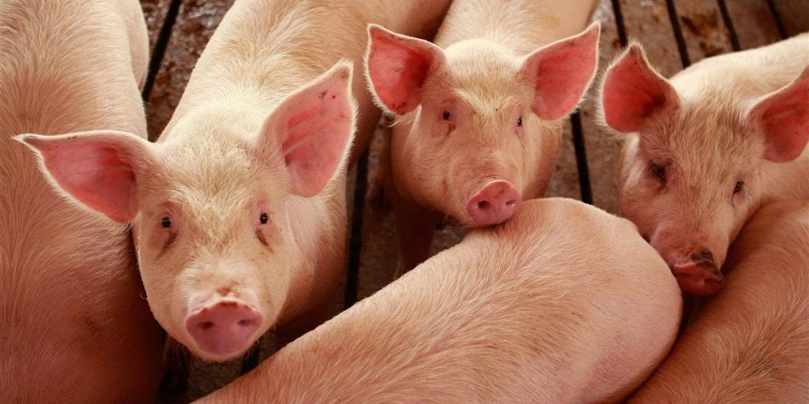
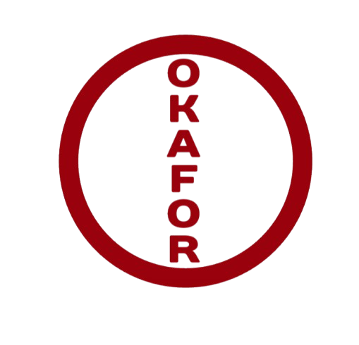
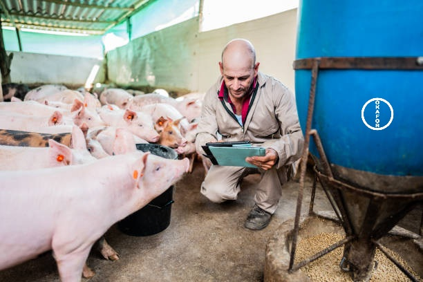
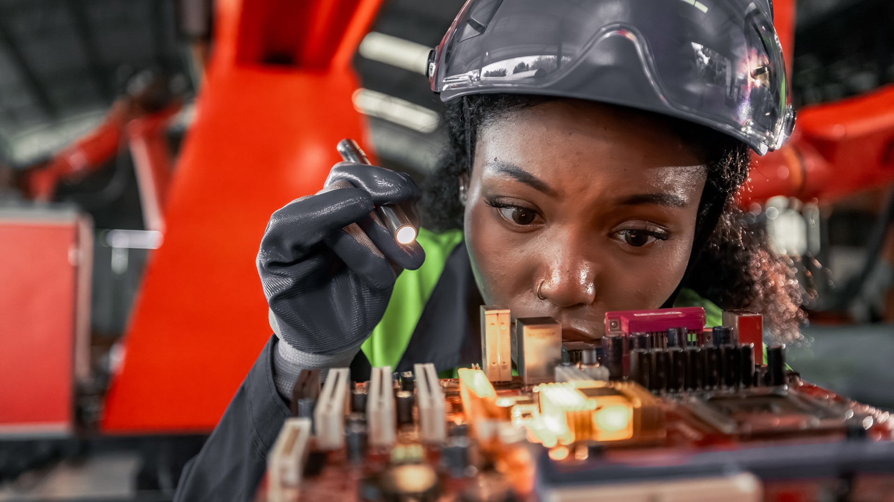
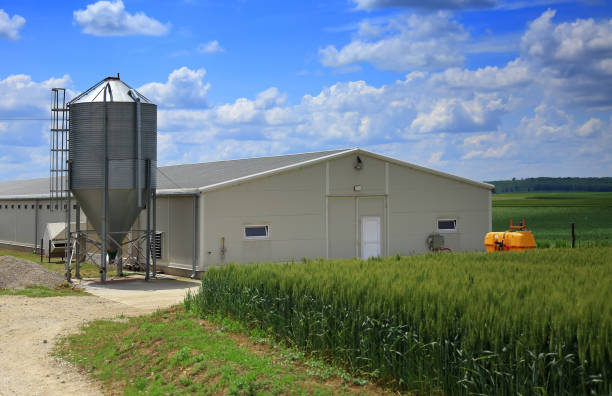
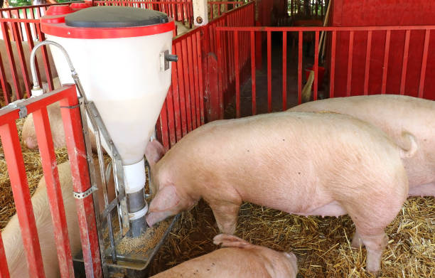
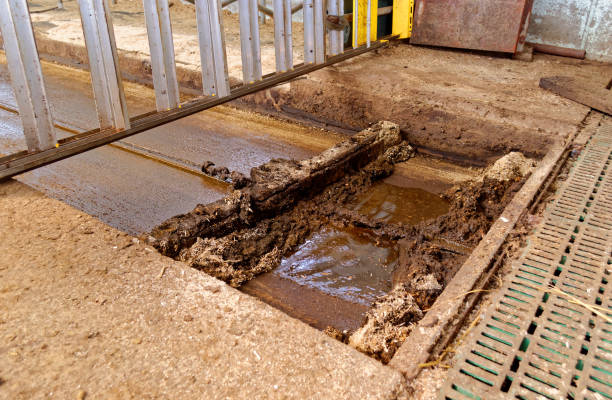
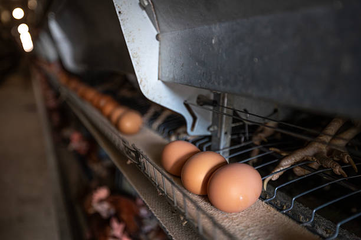
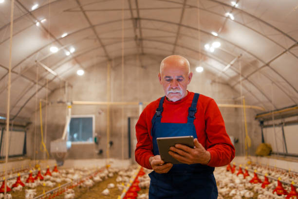

OKAFOR FARM TECHNOLOGY
Innovative solutions for modern swine farms
Farm design, automation and technology built around the way modern swine farms operate.

WHAT ARE YOU LOOKING FOR?
OKAFOR FARM TECHNOLOGY
Modern farms need more than individual pieces of equipment. They need systems that work together. We bring farm design, automation and technology together around the needs of the farmer, the animals and the operation.

ABOUT US
At Okafor Farm Technology, we look beyond individual machines. We study how a farm is designed, how animals move and live, how workers operate, and how information moves through the farm.
Our goal is to develop practical systems that make farming more efficient, manageable and responsive.
Contact UsWHAT WE DO

01
We connect important farm operations through technology to reduce unnecessary manual work, improve consistency and help farmers manage their systems more effectively.

02
We help develop farm environments around animal needs, workflow, biosecurity, equipment integration and the practical requirements of the operation.
More capabilities will be added as our technology and service portfolio develops.
SOLUTIONS
Explore the areas where farm technology can make a practical difference.

Support consistent feed access, efficient distribution and better control of feeding operations.
→
Improve cleanliness, hygiene and the management of waste within the farm environment.
→
Support efficient egg handling and collection while reducing unnecessary manual work.
→
Monitor important environmental conditions and respond to changes before they become larger farm problems.
→FARM CHALLENGES
Good farm technology begins with understanding what is happening inside the farm and why it matters.
Poor ventilation and environmental control can affect animal comfort, litter conditions and farm health.
Explore topic → 02Uneven feed distribution, waste and inconsistent intake can affect efficiency and animal performance.
Explore topic → 03Housing, environment, management and delayed information can all influence poultry health.
Explore topic → 04Farm design, environmental conditions and daily management play an important role in pig health.
Explore topic →AIR QUALITY
Poor air movement, excessive humidity and inadequate environmental control can create uncomfortable conditions for animals and contribute to problems such as wet litter and increased health pressure.
FEED OPTIMIZATION
Distribution, access, timing and consistency can all influence how animals consume feed and how efficiently the farm uses it.
CHICKEN HEALTH
Environmental conditions, ventilation, stocking, lighting, feeding and monitoring all form part of the environment in which poultry are raised.
PIG HEALTH
Housing conditions, air quality, temperature, hygiene, feeding and timely monitoring can influence the daily environment of pigs.
SERVICES
We support farmers beyond the initial system. Our services can include equipment support, farm planning, biosecurity design and practical recommendations tailored to the needs of each farm.
Every farm has different requirements. Our approach is to understand the operation first, then help develop systems and services around its specific needs.
EXPLORE FARM TECHNOLOGY
Choose your production system to explore solutions designed around its specific requirements.